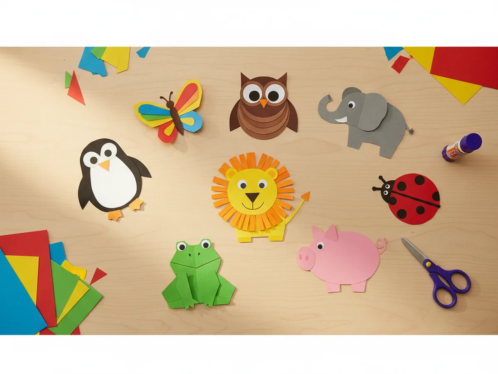
There is something so sweet about turning a few sheets of colored paper into a tiny zoo on the kitchen table. These paper animals craft ideas were chosen because they are simple, low-mess, and genuinely fun for kids to put together with you. No fancy supplies, no complicated folding, just paper, scissors, glue, and a little imagination. 🦁
Whether your child is two and just learning to glue, or eight and ready to design their own creature, there is a project on this list that will fit. Each paper animal craft uses materials you almost certainly already have at home, and most can be finished in twenty to thirty minutes. Pick one, pick a few, or work your way through the whole list on a slow weekend.
What You'll Need
Most of these paper animal crafts use the same handful of basic supplies, so you can keep a little crafting kit ready for whenever your child wants to make something cute. ✂️
- Colored construction paper, an assorted bulk pack covers every animal color from pink pigs to gray elephants.
- Bright cardstock, slightly stiffer than construction paper and great for animals that need to stand up.
- Fiskars kid scissors, blunt-tip scissors are safe and easy for little hands.
- Disappearing purple glue sticks, the purple color makes it easy to see where glue has been applied.
- Washable markers, perfect for drawing faces, spots, stripes, and tiny details.
- Self-adhesive googly eyes, an assorted-size pack adds instant personality to every animal.
- Pencil, useful for tracing simple animal shapes before cutting.
- Clear tape, handy for joining paper edges or attaching small parts.
20 Paper Animals Craft Ideas to Try Together
1. Paper Plate Lion with a Yarn-Free Mane
This paper animal craft turns a yellow circle into a friendly lion in minutes. Cut a large circle for the face, then snip lots of orange and yellow paper strips and curl them slightly with a pencil before gluing them around the edge for the mane. Add a small triangle nose, googly eyes, and a tiny smile and your lion is ready to roar. Toddlers love watching the mane bloom around the face.
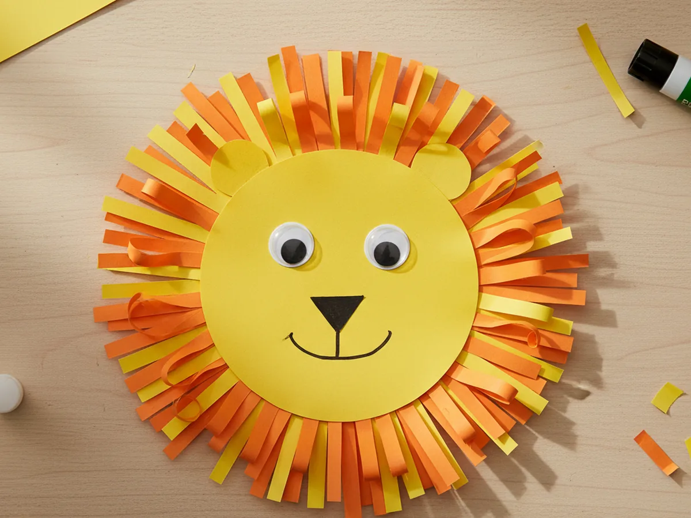
2. Wide-Eyed Paper Owl
Owls are forgiving, friendly animals to make from paper because they are mostly stacked circles and a triangle beak. Layer two large brown circles for the body and head, add cream circles for the belly and big eye patches, then top with two pointed ear tufts. Stick on big googly eyes and the owl instantly looks alive. This paper animals craft works beautifully for fall décor.
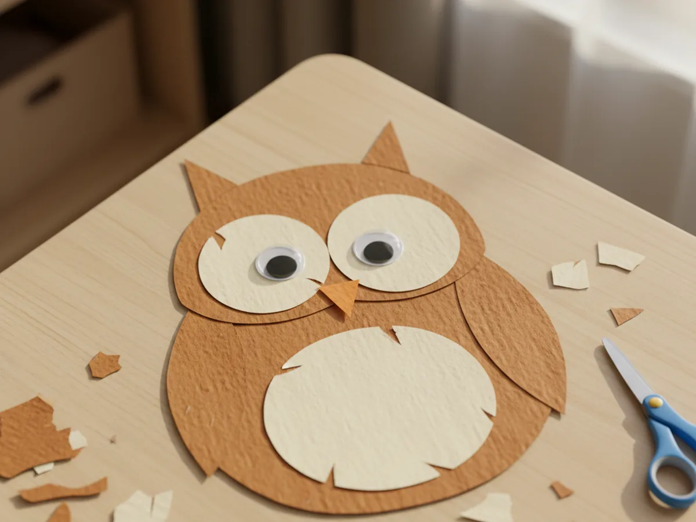
3. Waddling Paper Penguin
Penguins are such a satisfying paper animal craft because the contrast between black and white feels so crisp. Cut a black oval for the body, glue a smaller white oval onto the belly, then add an orange triangle beak, two small orange feet, and a pair of black wing shapes on the sides. Two large googly eyes finish him off. He looks ready to slide on the ice.
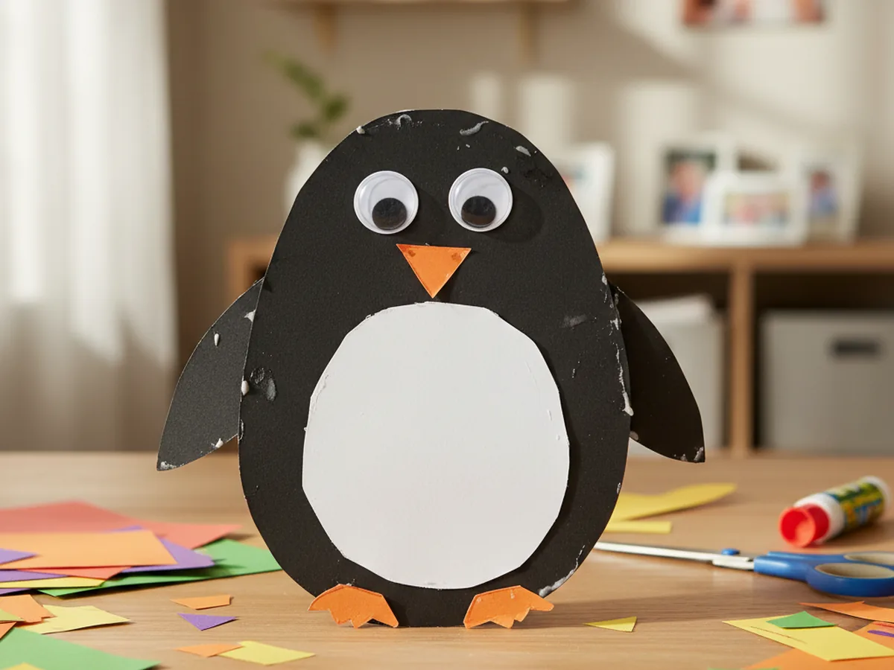
4. Big-Eared Paper Elephant
This sweet gray elephant is mostly two giant ears and a swinging trunk. Cut a rounded gray body shape, two large gray fan-shaped ears, and a long curving trunk strip that you can curl with a pencil. Glue everything down on a sheet of background paper and add tusks, a little tail, and a friendly eye. Elephants are one of the most popular requests in any paper animal craft session.
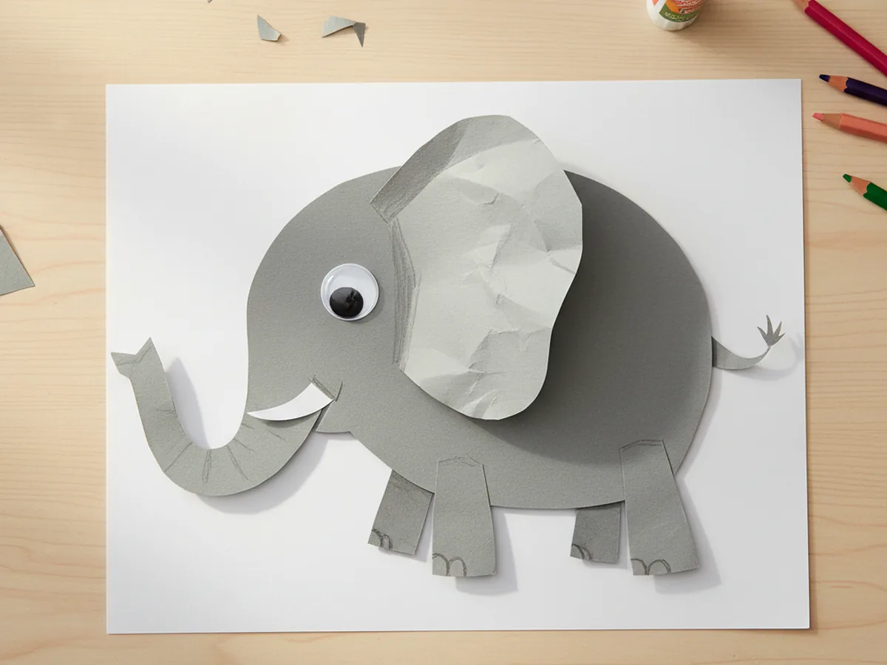
5. Hopping Origami Paper Frog
Origami jumping frogs are pure magic for kids. Take a green square of paper and follow the simple folds (you can find a beginner tutorial through a trusted resource like the origami tradition) to create a frog that actually hops when you press its back. Add tiny googly eyes on top and you have a toy and a craft in one. The first hop always brings a big squeal.
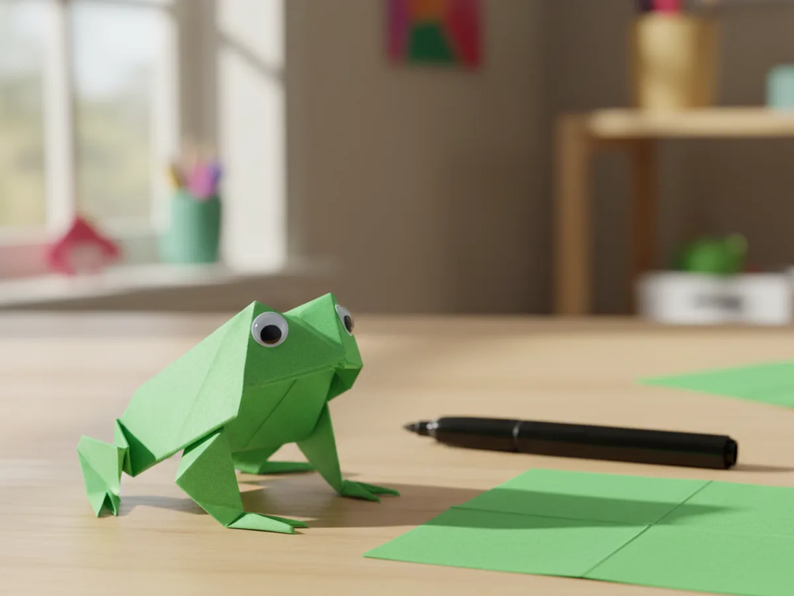
6. Floppy-Eared Paper Bunny
Bunnies are wonderful first animals to make because the shapes are so simple. Cut a round white head, two long teardrop ears with pink inner shapes, a tiny pink nose, and two big eyes. Add little whiskers with a marker and a fluffy cotton ball cheek if you want extra texture. This paper animal craft is one of the cutest you can make in under twenty minutes.
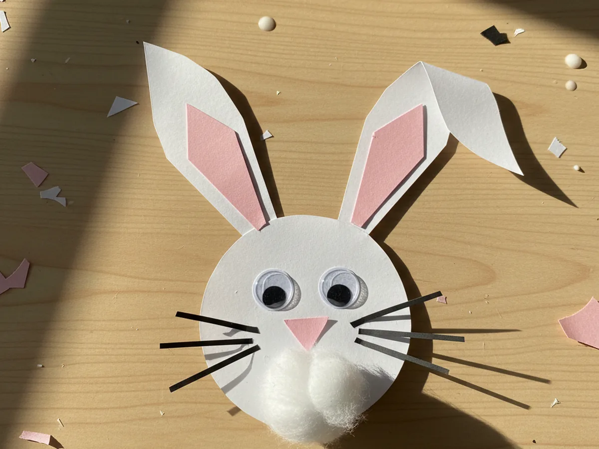
7. Whiskered Paper Cat Face
Every kid wants to make a cat at some point, and paper makes it easy. Cut a round face in any color (orange, black, gray, or even purple), add two small triangle ears with pink inner triangles, a tiny pink triangle nose, and big yellow or green eyes. Glue on three thin paper whiskers on each cheek. The result is a sweet little kitty your child will want to give a name.
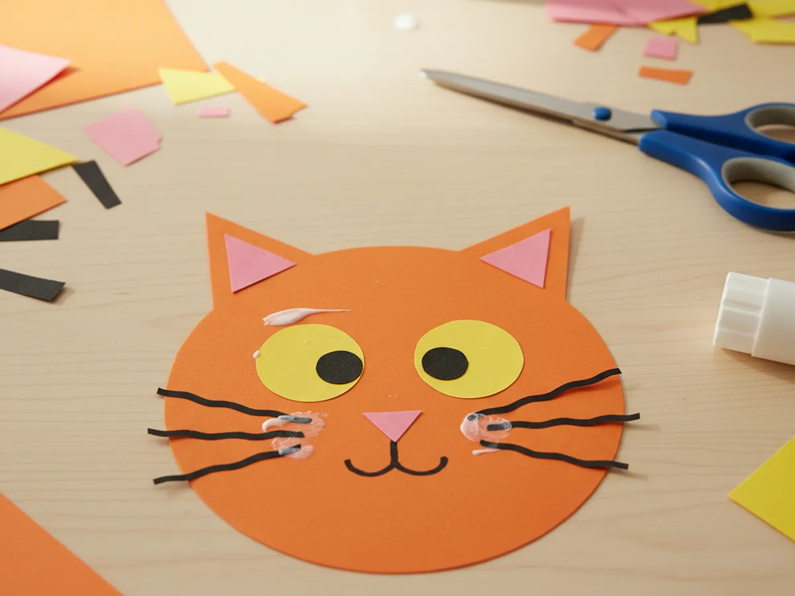
8. Friendly Paper Puppy
This paper animal craft turns a few brown shapes into the sweetest little puppy. Cut a round head, two long floppy ears that hang on either side, a small dark muzzle, a black nose, and two big eyes. Use a marker to add a smile and you have a puppy that looks ready to wag its tail. Children especially love adding spots in different colors to make the puppy their own.
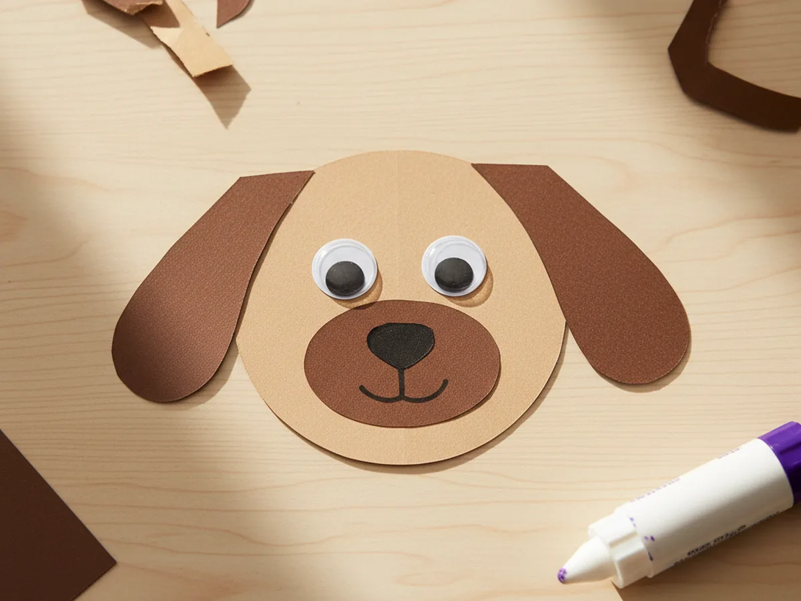
9. Rainbow Scaled Paper Fish
Fish are a classic paper animals craft for good reason. Cut a large oval body, then snip out lots of small colorful semicircle scales and glue them in overlapping rows for a beautiful rainbow effect. Add a triangular tail, a smaller triangle fin on top, and a googly eye. This is one of those crafts that looks far more impressive than the effort it took.
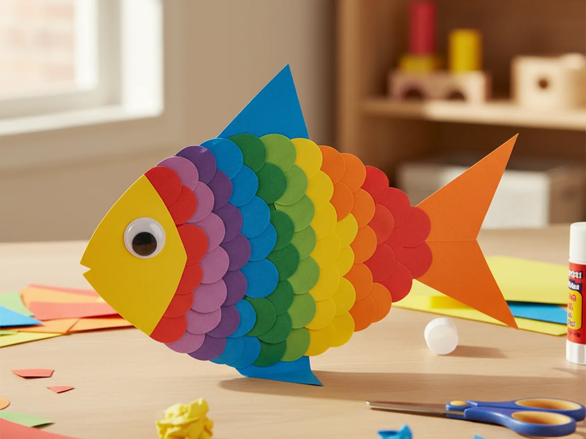
10. Symmetrical Paper Butterfly
A simple paper butterfly is one of the most beautiful paper animal crafts you can make together. Fold a piece of paper in half, draw half a butterfly along the fold, and cut it out so it opens into a perfect symmetrical shape. Decorate the wings with markers, dot stickers, or cut paper circles, then add a thin body and curling antennae. Hang one in the window for sunlight to catch.
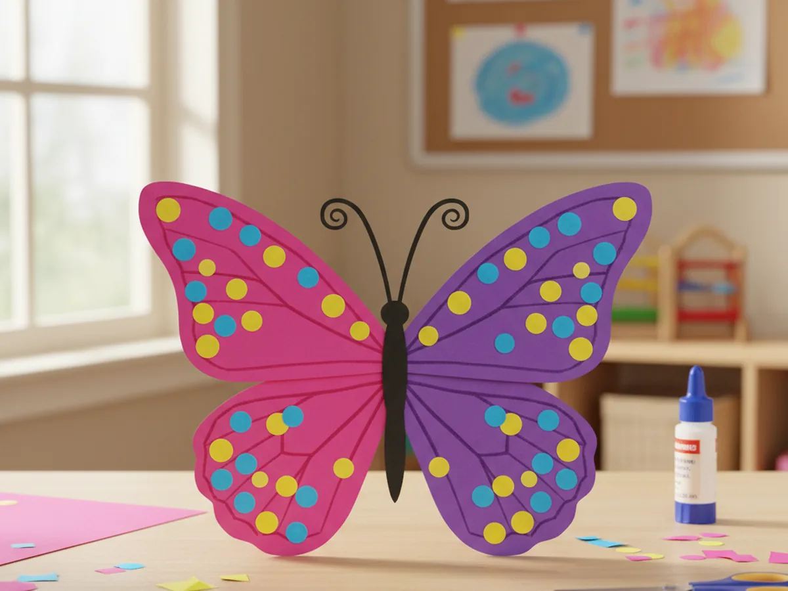
11. Buzzy Yellow Paper Bee
Bees are tiny and sweet and very easy to put together. Cut a yellow oval body, add three black paper stripes across it, two white teardrop wings, and a tiny pair of antennae on top. Big googly eyes and a little smile finish the look. Children love making a small swarm of bees and gluing them onto a sheet of paper as a cheerful little garden scene.
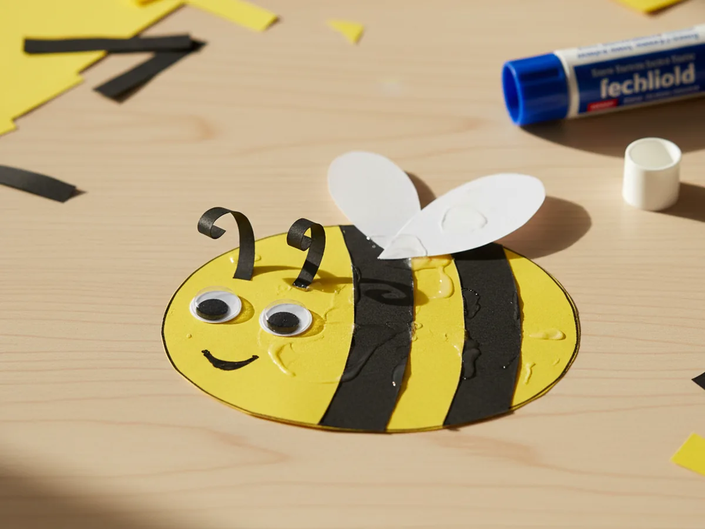
12. Spotted Paper Ladybug
Ladybugs only need a few cuts to look just right. Start with a red circle for the body, glue a small black half-circle for the head, then add little black dots and a thin black line down the middle to suggest the wings. Two tiny googly eyes on the head bring her to life. This is a wonderful paper animal craft for spring or any cheerful afternoon.
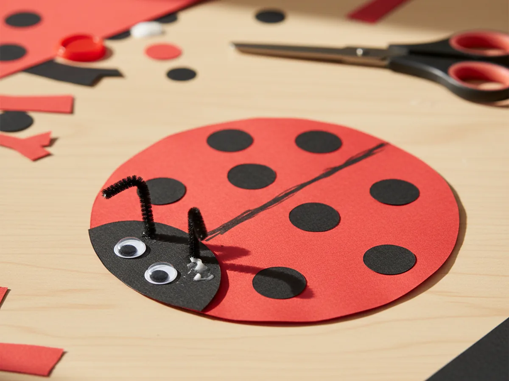
13. Patterned Paper Turtle
Turtles are slow and friendly, and the same goes for making one out of paper. Cut a large green oval shell and decorate it with small green and yellow paper hexagons or dots for a patterned look. Add a small green head poking out the front, four short legs, and a tiny tail. A pair of googly eyes makes him look genuinely curious about his new world.
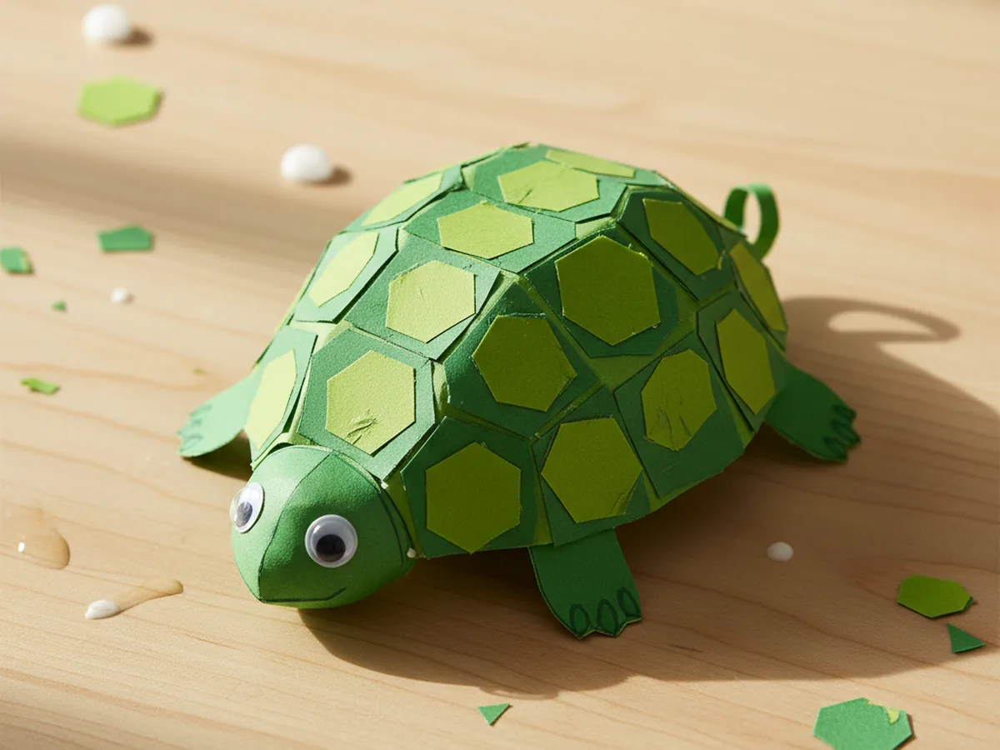
14. Accordion-Folded Paper Snake
This snake is one of the most fun paper animals craft projects to fold. Cut a long strip of green paper, fold it accordion-style back and forth, then glue a triangle head with a forked red tongue at one end and let the body wiggle out. Children love stretching the snake long, then squishing it short again. Small googly eyes at the very tip of the head make him friendly, not scary.
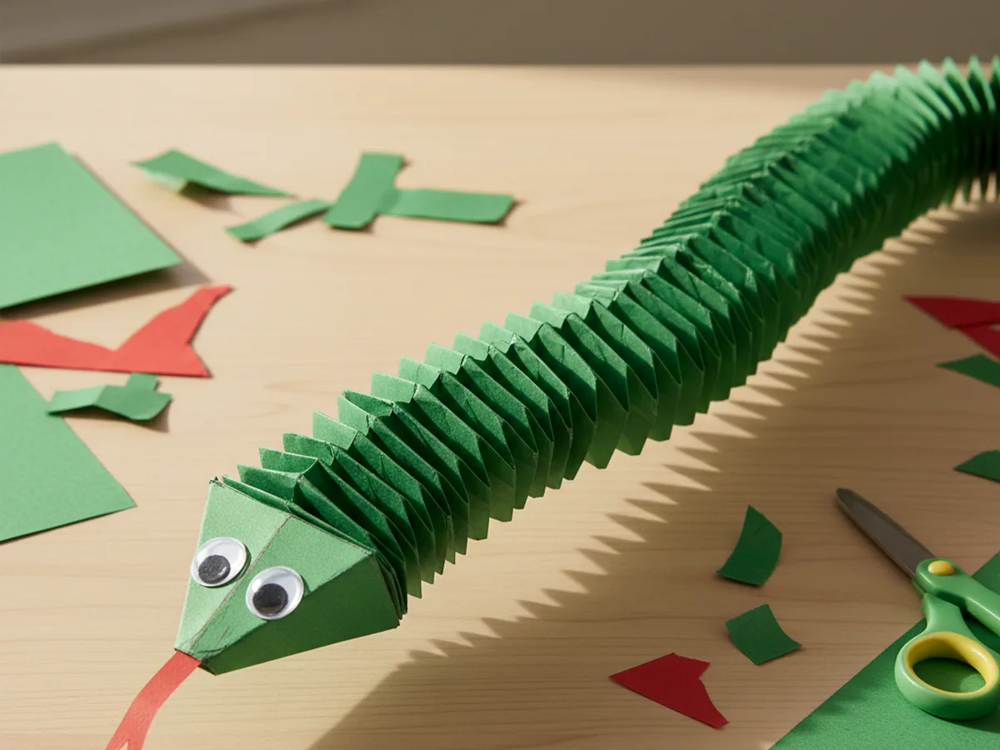
15. Tall and Spotted Paper Giraffe
A paper giraffe gives kids a chance to use the whole sheet of paper for that wonderfully long neck. Cut a yellow body and head with a long rectangular neck connecting them, add four straight legs, two tiny ear shapes, and short brown horn nubs on top. Glue or draw lots of brown spots all over and add a swishy paper tail with a brown tuft at the end. He looks magnificent.
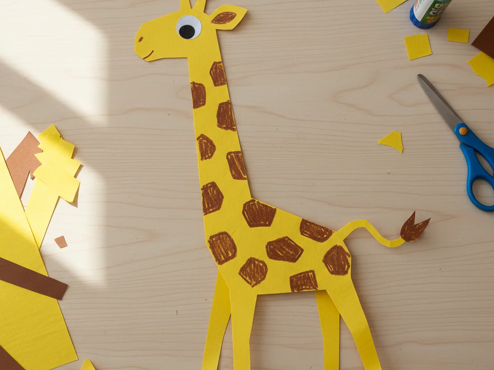
16. Black-and-White Paper Cow
This cheerful cow is built from a white body, a pink oval snout, two small horn shapes, and a few black blob spots glued randomly across the body. Add a pink udder, four short legs, and big sweet eyes. This paper animals craft always makes children giggle, and the spots are forgiving because real cows have all kinds of patterns.
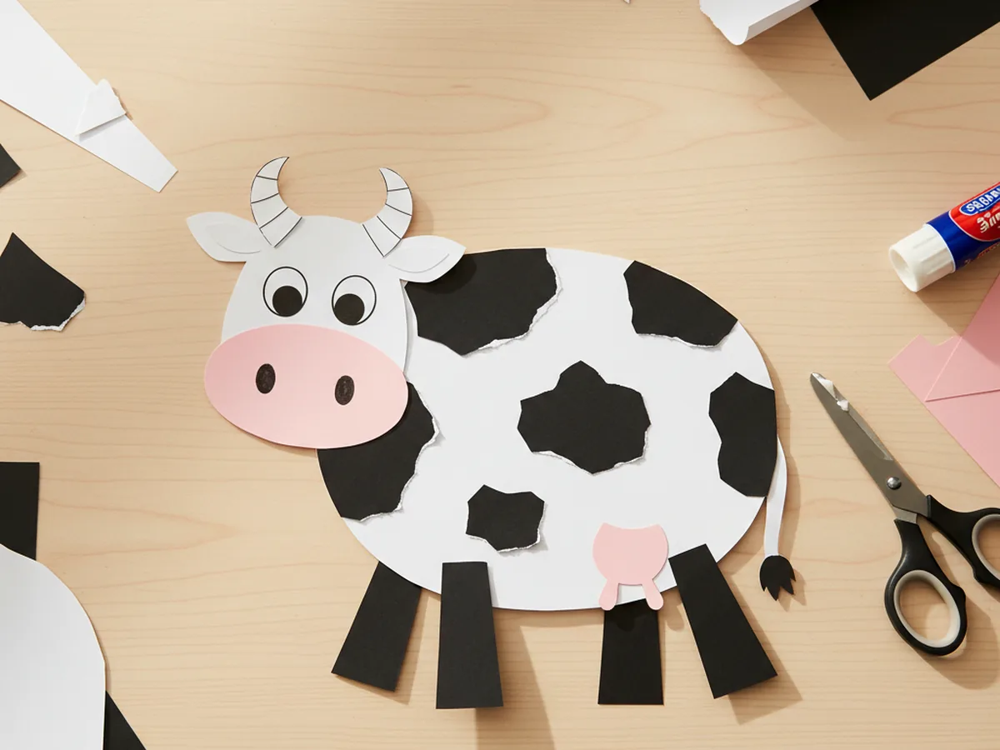
17. Curly-Tailed Paper Pig
Pink pigs are about as cheerful as a craft can get. Cut a round pink body, four short legs, two triangle ears, and a small oval snout with two black dot nostrils drawn on. The most fun part is cutting a thin pink paper strip and curling it tightly around a pencil for the iconic curly tail. Add big sweet eyes and you have a pig that looks ready to oink.
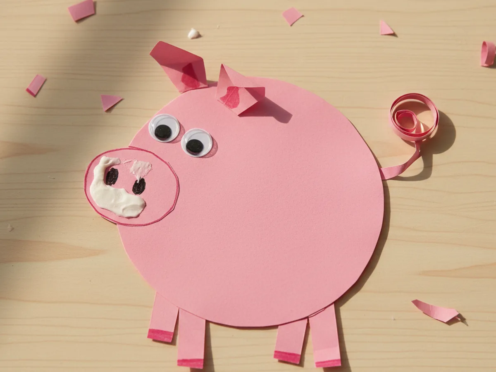
18. Cotton-Ball Paper Sheep
Sheep are one of those paper animal crafts that feels luxurious because of the cotton ball texture. Cut a black oval head with four short black legs, then glue cotton balls all over a white circle body for the woolly fluff. Add little ears, two googly eyes, and a tiny pink nose on the face. Kids find the fluffy texture really fun to touch as they work.
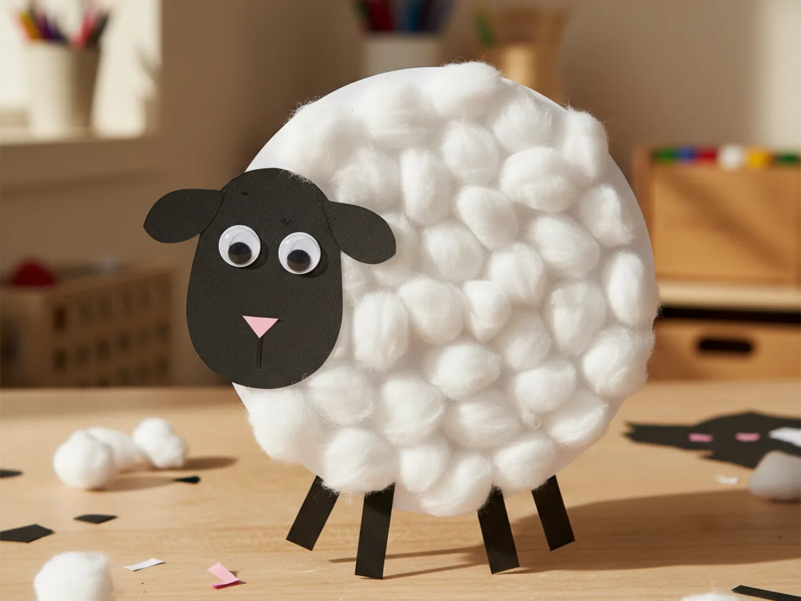
19. Tiny Round Paper Mouse
This little gray mouse is quick and irresistibly cute. Cut a small gray semicircle for the body, two round ears with pink inner circles, a tiny pink triangle nose, and a long thin curled tail at the back. Two small black dot eyes finish her off. Make a whole little family of mice in different sizes for a sweet group photo on the fridge.
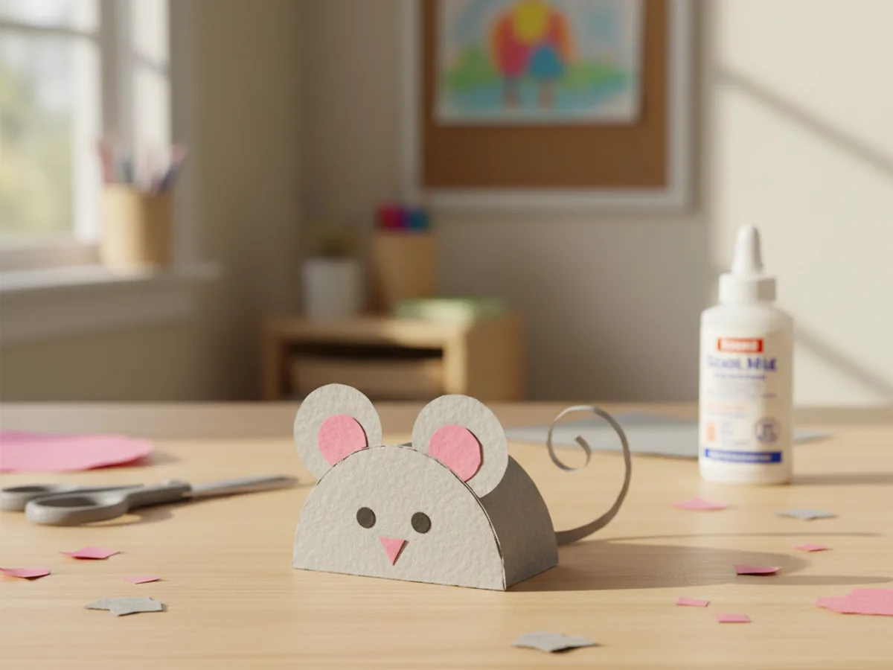
20. Rainbow Paper Peacock
Save the most show-stopping paper animal craft for last. Cut a teal body shape with a small head and a tiny yellow beak, then layer a big fan of overlapping teardrop feathers in blue, green, purple, and gold behind it. Add small dot accents on each feather to suggest the famous peacock eye pattern. The finished bird looks like real wall art a child can be proud of. 💛
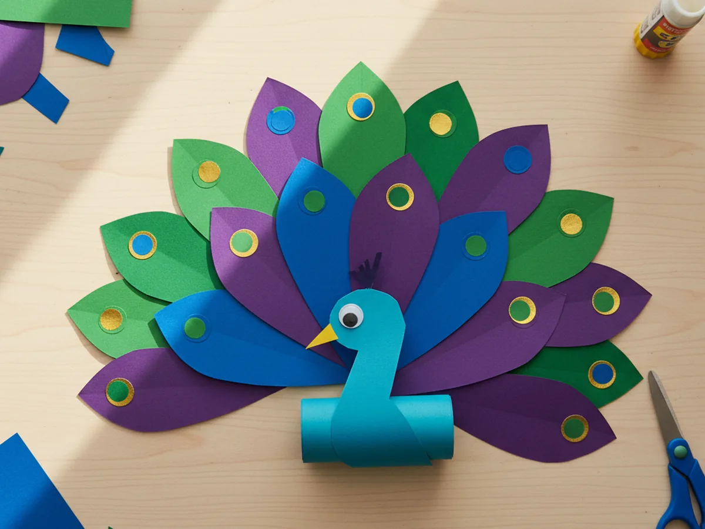
Final Thoughts
What makes a paper animals craft session so lovely is how little it asks of you. A few sheets of colored paper, a glue stick, and a quiet hour at the kitchen table is honestly all you need. The animals do not have to look perfect to make your child light up with pride, and the small wonky details are usually the parts they love most when they look back at the craft later. 🐢
Pick one animal that feels right for today, or work through several over a week. There is no wrong way to enjoy the time together, and the messy little zoo that grows on your fridge is a sweet record of an afternoon well spent.
More Crafts You'll Love
If your kids enjoyed making these paper animals, here are two more easy projects that fit perfectly into a relaxed afternoon together.
Happy crafting, and enjoy every silly, wobbly, wonderful little creature you make together.